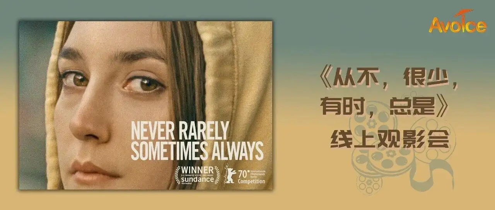
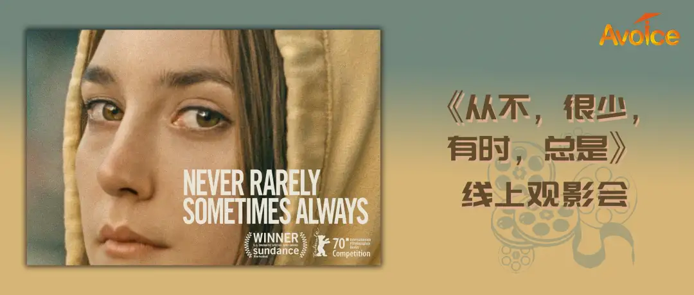
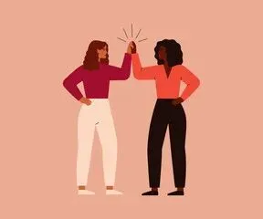
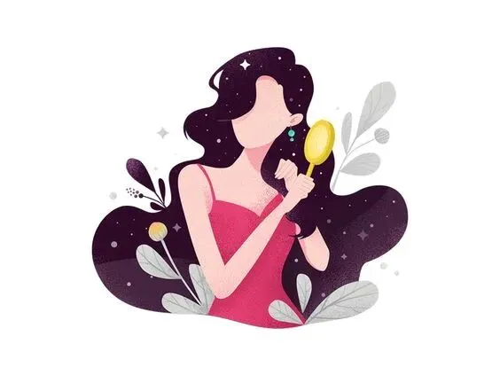

引子
在电影《教父》开头，有一段这样的描述。“她跟他去看电影，很晚回家，我没有反对。两个月前，他和另一个男孩带她去兜风，他们骗他喝威士忌，企图占她便宜。她反抗保住了贞洁和尊严，却被他们像畜生似地殴打，我赶到医院，她的鼻梁断了，下颚粉碎性骨折，得用钢丝箍起来才行”。这让我想到了《女权辩护》里的一段话，卢梭说：‘用男人的教育方式来教导女人，她们和我们男人越相似，她们支配我们的权力就会越小。’这也正是我想说的。我不希望她们有支配男人的权力，只是希望她们有能力支配自己。
上个月，美国罗诉韦德案被推翻引起了全世界各地人们的不同看法，案件的余波持续发酵。我相信有很多美国女子都因此需要接受不允许堕胎的人生，即使是一位女子需要负担这种裁决的代价也是不能承受和被接受的。如果四周是无限的黑暗，那如何能够让绝望和荆棘不在心里开花。一切都没有变，繁华的都市，宁静的家乡，甚至风依旧在吹，只是很多事和情感她们再也感受不到了。所幸会有人投来微弱的关怀照亮对方。

图片来源：pinterest
正如在2020年获得柏林电影节银熊奖的电影《从不，很少，有时，总是》描述的故事。这是美国女导演伊莉莎-希特曼， 根据2012年爱尔兰女牙医要求堕胎， 不断被拒绝， 最后导致死亡的新闻事件而创作的一部剧本。
带着淡淡的伤痛感的故事描述了宾州的小镇上，忙碌在上学和打工之间的普通少女奥顿发现自己怀孕最终在表妹思凯乐的陪伴下坐着大巴去纽约完成了堕胎手术。两个处于青春期的未成年少女一边用“妓女”嘲笑自己的渺小，一边需要达成交易才可以获得返乡的车费钱，所幸在这个人生的分岔路两人互相依偎照料。
在这部电影里，出现两处女性手握手的场景，非常细腻。这让我想起关于宗教的一个陈述。据说在摩尼教被打压的年代，两个摩尼教教徒通过在见面时互相伸出右手，传达愿意彼此救赎的意思。
看完电影后，我截取了网上的三个评论：
01
让这个在平庸调度下的陈旧题材散发出一丝光芒的，恐怕是大巴上搭讪男引出支线。正是这种貌似暧昧情感背后混杂着的权力和经济驱动力，催生着男女关系中“第二性”诞生，以及附着的这种社会结构，现实生活中男女情感权力的复杂性。
02
大量的近景与特写营造的压迫感如同无形的墙一样无处不在，恰恰这就是女性所面临的困境：突然有一天要面对全世界，却发现自己完全无力应对的无力感。 尽管整体情绪波澜不惊，但是「从不，很少，有时，总是」出现时还是有被击中，这个片名应该再也不会念错了。
03
“朱诺”只存在于电影里，本片才是真实的少女堕胎记。导演的镜头感非常好，高潮伴随着“从不，很少，有时，总是”几个词意外来临。喜欢女孩们彼此淡淡的情谊和勾手指。
图片来源：freepik
这些观影日记和评论也让我想起戈达尔在电影《筋疲力尽》一片中，帕特里西亚问小说家：“ 你认为女人在现代社会是否有她的定位？”我们知道这是个很常见的故事，但对电影里帕特里西亚来说，这又是一个真实的两难情境，她应该追求新闻记者的职业生涯呢还是让她自己被吸纳到米歇尔的世界，一起演出一部综合了暴力、他对她的爱、四处躲窜警察，以及许诺在意大利同享自由和财富梦想的警匪片？小说家回答既简短又切中要害。他缓缓摘下太阳眼镜，上身往前倾，对帕特里西亚投以意味深长的一眼。说，“是的，如果她外表非常迷人，而且穿着脱衣舞装，戴上深色太阳镜的话。”这似乎是别有所指的暗示：女人对现代社会的贡献可以依据她们的性吸引力来加以衡量。戈达尔洞察了将女人塑造成刻板印象，并且把她们压抑得柔弱无能的各种力量。揭露了消费社会里女人转化成影像是如何遭受剥夺。对戈达尔而言，女人的影像是消费社会真正的基础。——《戈达尔：影像、声音与政治》
可能我们都不太明白也无法避免时时刻刻存在的这个“他者”，但是我还是决定反抗它。我希望女性朋友们可以原谅上述文字里的一阵见血，因为我真诚想指出女性面对的苦难，使他们相信：那些温柔话语、敏感细腻和优雅的裙装，是软弱，像水仙花一样的爱情，不能持久。女性应努力争取身心两方面的力量，因为那里除了要求、规律、义务的字眼，是快乐、光耀和美的地方。甚至不用考虑，我就决定了我也要这么做。

图片来源：pinterest
欢迎大家参与本期观影活动，我们预计在北京时间8月6日（星期六）晚上八点半至十点举办《从不，很少，有时，总是》线上观影活动。
腾讯会议号码：624-577-460，届时希望大家参与！
扫码报名预约观影活动
扫码加入观影微信群
撰稿 | Parapluie 若祺
海报 | 冯源元
排版 | Kristina